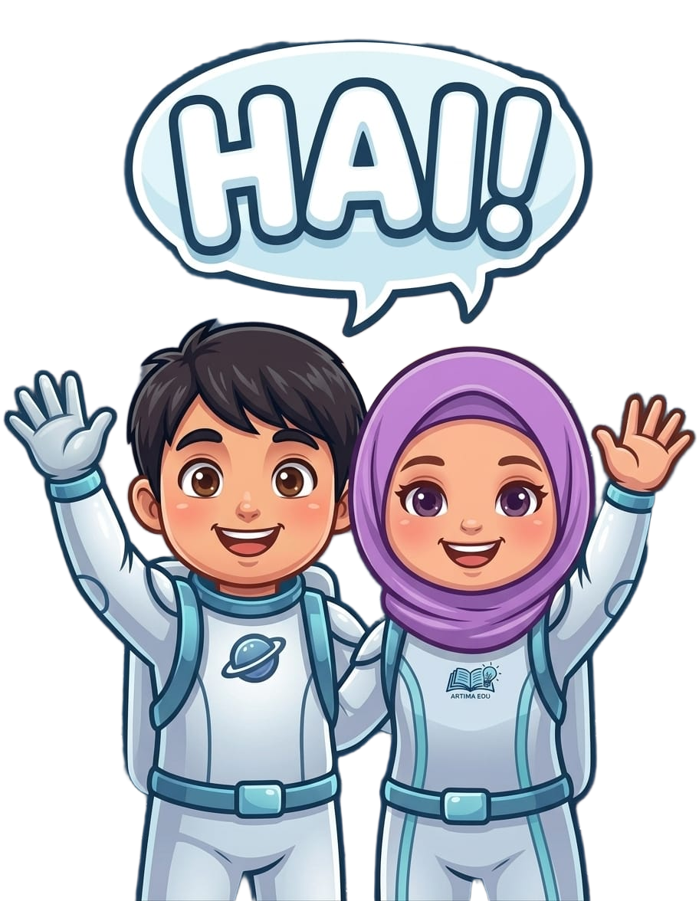

⚡ Status: Di Luar Jangkauan Orbit
Kamu Sedang Offline
Koneksi internetmu sedang terputus. Tenang! Halaman yang sebelumnya sudah pernah kamu buka dan game edukatif di Mini Games tetap bisa dimainkan tanpa internet.